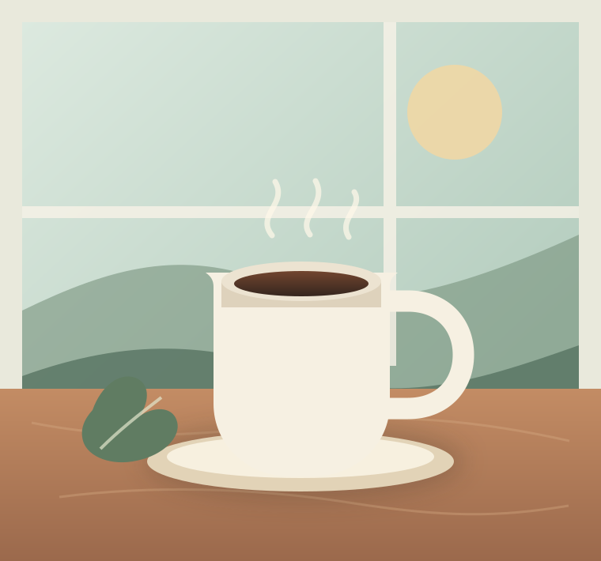

精選咖啡豆
仔細挑選風味平衡、適合日常品飲的咖啡豆，讓每一杯都值得期待。
一段留給自己的日常
在熟悉的香氣裡，找到自己的生活節奏。
不用趕路，也不必安排什麼。挑一個喜歡的位置，讓一杯咖啡陪你，把平凡的一天過得剛剛好。
讓咖啡，陪你慢下來。

OUR LITTLE PROMISES
一杯日常咖啡的背後，
是我們珍惜的幾件小事。
仔細挑選風味平衡、適合日常品飲的咖啡豆，讓每一杯都值得期待。
用細心與耐心照看每一批咖啡，讓豆子的香氣慢慢舒展。
不拘束的氛圍，適合閱讀、談天，也適合一個人安靜地坐坐。